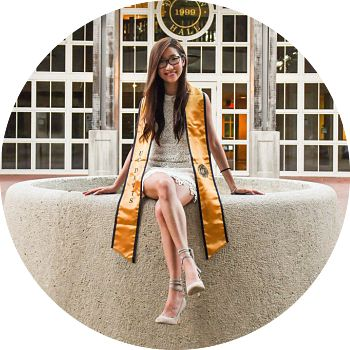

<div class="blurb">
	<section class="main-content">
	<h2><strong><span style="color: #DC143C">About me:</span></strong></h2>
	<blockquote>
	 
	 <p>Stephanie is an undergraduate student who is pursuing a Bachelor of Science Degree in Applied Statistics with an emphasis in Managerial Economics at the University of California, Davis. Before moving to the United States, she was born and raised in Hong Kong, a fast-paced financial city where creativity, analytical and problem solving skills are very essential. From a very young age, she has always been fascinated by how numbers can be used in the real world and has relished the challenge of problem solving that statistics can provide. With a passion in business and statistics, her ambition is to be a certified actuary, as she wants to incorporate all her acquired skills in STEM education and business knowledge to solve real financial problems. </p>
	 <p>During sophomore year, Stephanie worked at Teaway in Alameda, California as a part-time team member. She learned a lot of problem solving skills as she tried to resolve unexpected and difficult situations such as customer complaints promptly and professionally. Although the job was not particularly high on mathematical content, working in a busy milk tea place provided her with the opportunity to improve her ability to cope under pressure during peak periods. Additionally, this experience has vastly improved her communication skills as well as consolidated her self-confidence and her ability to work alongside others. </p>
	 <p>Stephanie continues her studies in Davis and expects to graduate in June 2017. She is now learning data science using different programming languages such as Python and R and engages in different projects that require analytical and problem solving skills as much as possible. The skills that she has obtained will help achieve her aspiration of becoming an actuary. She is also preparing for her first actuarial exam (Exam 1/ Probability) while maintaining her GPA above 3.5. Her short-term goal is to pass the first two exams within one year. After completing her statistics degree, she hopes to have more relevant experiences in the actuarial science field while she continues to prepare for actuarial exams.</p>
	 <p>In her spare time, Stephanie loves to manage her stress by painting and practicing yoga. She enjoys traveling with her friends and using her camera to capture unforgettable moments and places. She also takes pleasure in cooking and trying out different kinds of ingredients to create new dishes. </p>
		
		
	<h3><strong><span style="color: #DC143C">Education:</span></strong></h3>
	<small>
	<table class="table table-condensed">
		<tr><th>Coursework</th><th>Language</th></tr>
		<tr>
			<td>Statistical Data Science</td><td><u>R</u></td>
		</tr>
		<tr>
			<td>Statistical Data Technologies</td><td><u>Python, Jupyter Notebook, HTML/CSS, SQL</u></td>
		</tr>
		<tr>
			<td>Applied Time Series Analysis</td><td><u>R</u></td>
		</tr>
		<tr>
			<td>Analysis Categorical Data</td><td><u>SAS & R</u></td>
		</tr>
		<tr>
			<td>Analysis of Variance</td><td><u>R</u></td>
		</tr>
		<tr>
			<td>Programming & Problem Solving in C</td><td><u>C</u></td>
		</tr>
		<tr>
			<td>Intro to Programming</td><td><u>Python</u></td>
		</tr>
		<tr>
			<td>Econometric Theory and Applications</td><td><u>Shazam</u></td>
		</tr>
	</table>
	</small>
	</blockquote>
		
	<hr>
	<h3><span style="color: #DC143C">Projects:</span></h3>
	<a href="../Projects/index.html"></img></a>
	<br>  
	<p> &#9757; click image for the list of project &#9757; </p>
	<br>
	<hr>
	
 </section>
</div>	
